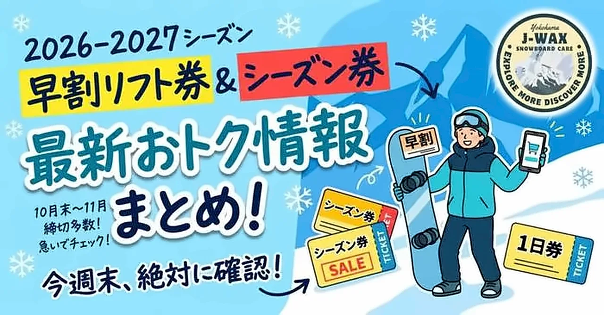
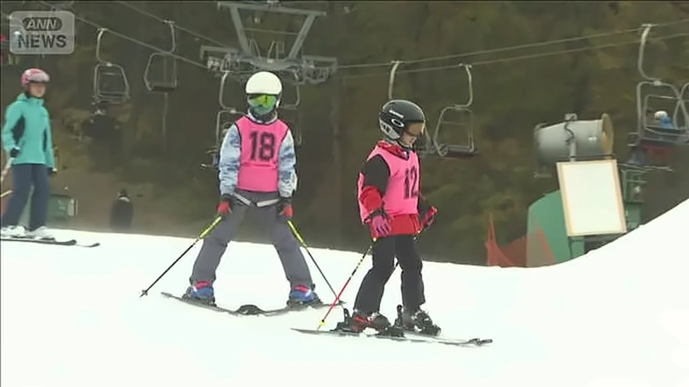
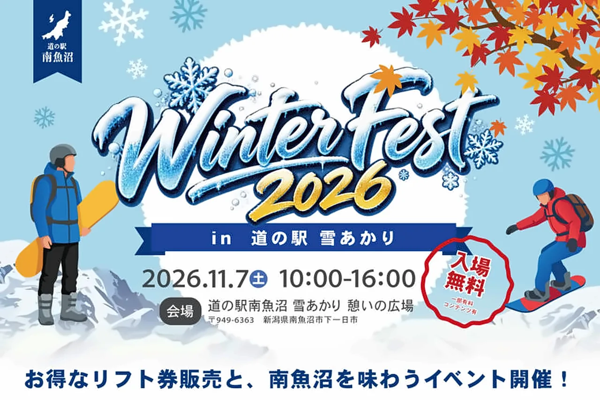
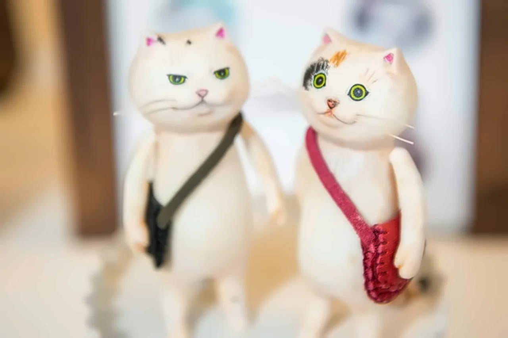
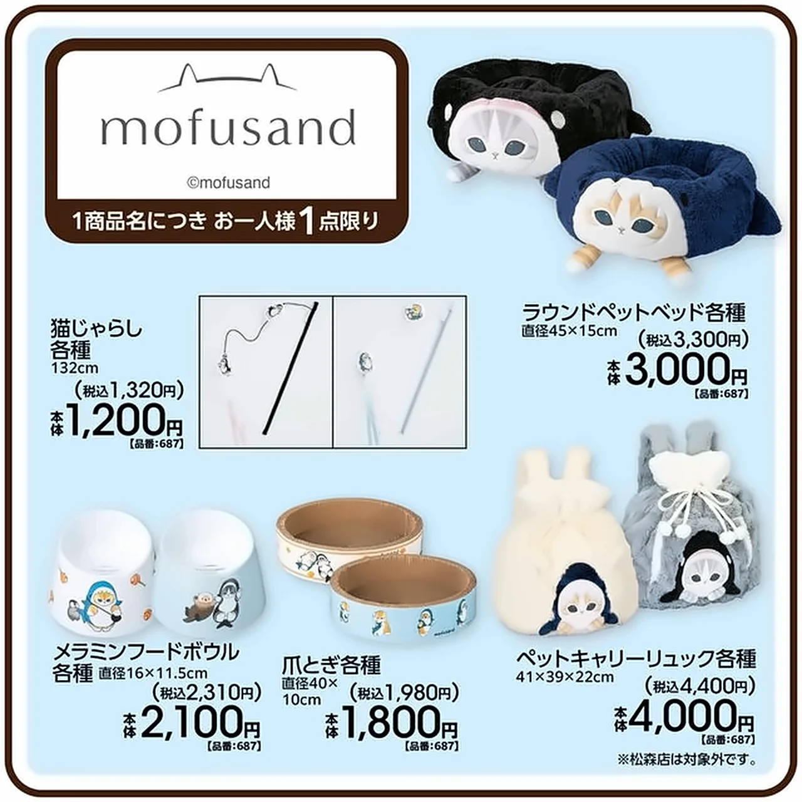
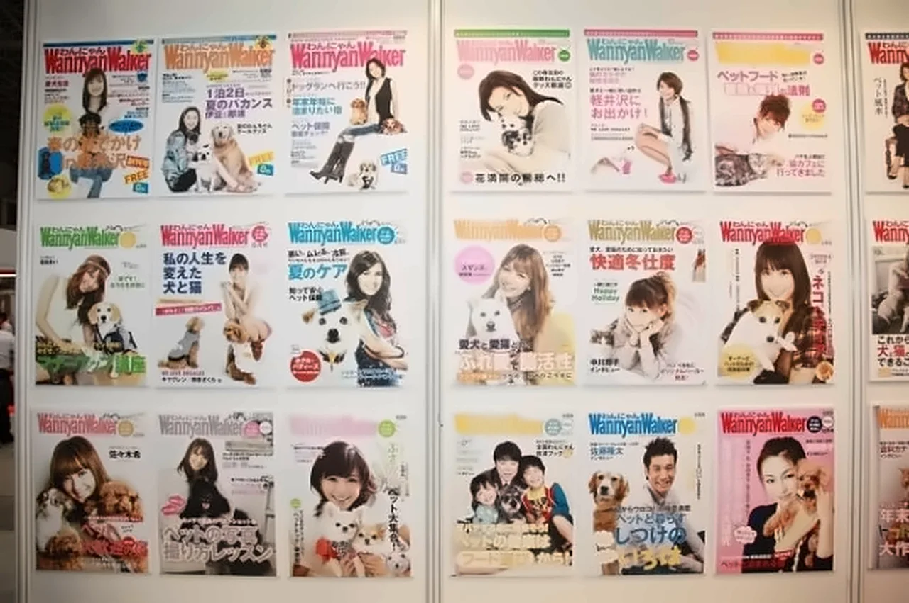
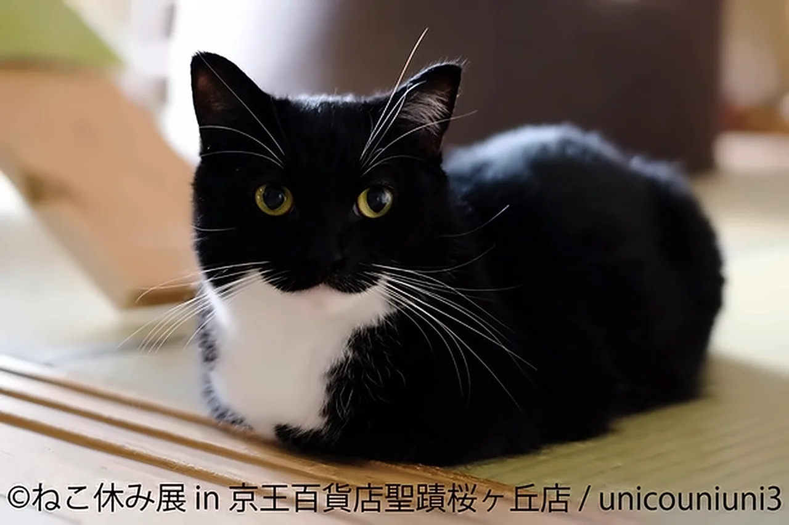
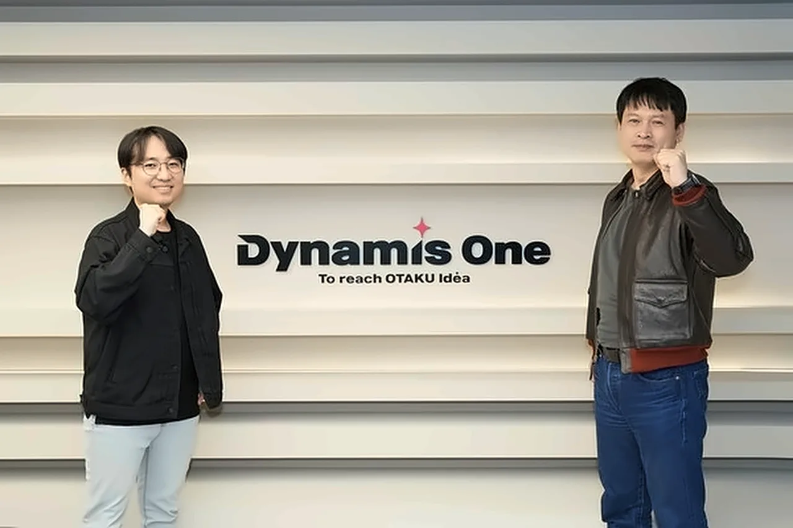

note.com
滑雪
90 本 → 画面に 16・もっと見る 73


 news.infoseek.co.jp
news.infoseek.co.jp【星野リゾート】福島県のスキー場「ネコマ マウンテン」26-27シーズンの営業開始 - ツリーランゾーンが拡大 、新たな宿泊拠点も誕生へ
 prtimes.jp
prtimes.jp【JAM福井勝山マウンテンリゾート】“通過する場所”から“過ごす場所”へ。リゾートセンターを「JAM HALL」として大幅リニューアル
 travelvoice.jp
travelvoice.jp小学生以下は全国16カ所のスキー場が 滑り放題 、共通シーズンパスが登場、参加費1人1800円
 msn.com
msn.comLock in: These are the best snowboard bindings of 2027
 news.dellows.jp
news.dellows.jp富良野スキー場、1日10名限定のファーストトラック企画を 2027年1月に開催 へ
 gunosy.com
gunosy.com【SURF&SNOW】2026-27シーズン、スキー場オープン情報！ 10月23日 に「イエティ」が日本一早い営業開始へ

topics.smt.docomo.ne.jpスノーシーズン到来 軽井沢のスキー場で 初滑り 雨少なく人工雪が順調

topics.smt.docomo.ne.jp【南魚沼市・Winter Fest 2026】お得なスキー場の 早割リフト券の販売 やぬか釜炊きの新米も味わえるイベント
 walkerplus.com
walkerplus.com長野県「戸狩温泉スキー場」が リニューアルオープン ！日本最長のモーグルバーンや「焼肉ジャンボ」プロデュース店が新登場
 msn.com
msn.com信州のウインターシーズン幕開け! 軽井沢のスキー場が今季の営業スタート 【長野】
 news.nicovideo.jp
news.nicovideo.jp苗場・かぐら・六日町八海山スキー場で今シーズンからマイナンバーカード連携商品を販売開始
 iza.ne.jp
iza.ne.jp苗場ドラゴンドラ・田代ロープウェー紅葉が 見頃ピーク に！
もっと見る（73）
 ovo.kyodo.co.jp
ovo.kyodo.co.jp今季は連続ウェーブやコブラインが新登場
 prtimes.jp
prtimes.jp【トマム】滑り終えた後は、雪上ペアリフトチェアで乾杯！ゲレンデの余韻に浸る アフタースキーイベント 「トマムdeアプレスキー」開催
 newscast.jp
newscast.jpニセコワオロッジ、日本国内在住者向けに 冬の宿泊をお得に楽しむ 特別割引プラン を販売開始
 dmksnowboard.com
dmksnowboard.com【2026-27】軽井沢プリンスホテルスキー場が 10月31日オープン ！初日は2コースで営業開始
 dmksnowboard.com
dmksnowboard.comスキー場で「マイナ割引」が拡大！リフト券が 最大39％引き 、10スキー場共通券も登場
世界最高峰のフリーライドスキー・スノーボードの国際大会Freeride World
二世古滑雪住宿「Niseko Wow Lodge」推 日本居民限定折扣 12月起冬季入住
 prtimes.jp
prtimes.jp【国内初】スキー場跡地の斜面を生かした、全長330mの舗装スネークランが誕生！岡山県西粟倉村「MOUNTAIN TRACK おおがや」 2028年春開業 へ
 news.dellows.jp
news.dellows.jp686が日本限定スノーボードウェアLS1とLS2の 2026-27モデル を発売
 prtimes.jp
prtimes.jp「佐久スキーガーデン パラダ」2026-2027シーズン公式ポスターが完成！完全ファミリー＆初心者向け、手ぶらで楽しむ快適スノーリゾート
 note.com
note.com【ネコマ マウンテン】 超早割は11月3日まで ！新登場の3日券・5日券と新しい宿泊拠点
 dmksnowboard.com
dmksnowboard.com【ルスツリゾート】 最大35時間 滑れる前売リフト券を期間限定販売
 mtnweekly.com
mtnweekly.comNitro Phase x Motörhead Snowboard Review: All-Mountain Performance & Value
 boardoftheworld.com
boardoftheworld.comRome Service Dog Snowboard Review: Upgraded and Ready to Jib
 boardoftheworld.com
boardoftheworld.comBurton Blossom Snowboard Review
 boardoftheworld.com
boardoftheworld.comCapita Super DOA Review: Is It Worth the Upgrade vs the Regular DOA?
 sports.yahoo.co.jp
sports.yahoo.co.jp【男子 ハイライト】アルペンスキー FIS ワールドカップ 2026/27 ジャイアントスラローム
ルスツリゾート、前売リフト券の25時間券を 10月27日より期間限定で発売 へ
 hotelbank.jp
hotelbank.jpスキー場オープン日2026-27と宿の単価｜ 軽井沢10/31開幕 、11→12月は白馬+60%・倶知安2倍
 news.dellows.jp
news.dellows.jp東急リゾーツ＆ステイ、2スキー場で 平日子どもリフト券無料化 へ
 article.auone.jp
article.auone.jp北海道・トマムのスキー場にゲレンデ直結の新施設「 アドベンチャーベース 」
 news.tv-asahi.co.jp
news.tv-asahi.co.jp「 日本一早いゲレンデ 」オープン 過去最強エルニーニョで暖冬予想 人工雪が心配
 news.mynavi.jp
news.mynavi.jpファーウェイ最新ウォッチは スキー・スノボの滑走分析 や健康管理が進化！ WATCH GT 7 Pro・WATCH 6実機を見た
 news.nicovideo.jp
news.nicovideo.jpスノーパーク イエティ 2026-2027シーズン｜28年連続！屋外スキー場として 日本一早くオープン
 news.infoseek.co.jp
news.infoseek.co.jp【シーズン到来】裾野市のスキー場「スノーパーク イエティ」が 日本一早いオープン 初日は約400人
 newsdig.tbs.co.jp
newsdig.tbs.co.jp“日本一早い”屋外スキー場オープン 28年連続 で 仮装客が初滑り満喫＝静岡・スノータウンYeti
 straightpress.jp
straightpress.jp⻑野県⼩⾕村「つがいけマウンテンリゾート」の2026-27ウィンターシーズン営業日が決定！新設備
 topnotchoutdoor.com
topnotchoutdoor.comCAPiTA Space Metal Fantasy Review (2026/2027): Tested at Whistler
 news.nicovideo.jp
news.nicovideo.jp札幌のホテルから、手ぶらで日本新三大夜景のゲレンデへ！「札幌藻岩山スキー場」コラボ特別宿泊プランを 10月24日（土）より販売開始
 dmksnowboard.com
dmksnowboard.com【2026-27】新潟10カ所のスキー場が 滑り放題 ！「SNOW HEAVEN シーズンパス」発売へ
 news.dellows.jp
news.dellows.jp2026-2027スキー＆スノボツアー、 10月22日にオープン へ
【富良野スキー場】「FURANO bonchi powderファーストトラック with Photo Session」 今年も開催
ハンターマウンテン塩原＆たんばらスキーパーク、平日限定で 小学生以下のリフト券が無料 に
 travellingforbusiness.co.uk
travellingforbusiness.co.ukPortetta unveils expanded mountain experiences for winter 2026/27
【トマム】ビギナーから上級者まで。誰もがスムーズに雪山へ繰り出せるスキー場の新拠点「Adventure Base」が 2026年12月1日オープン
 switchbacktravel.com
switchbacktravel.comBest Ski Bindings of 2026/27
 news.dellows.jp
news.dellows.jp川場スキー場が2026-27シーズンに向け 新パーク新設 や施設刷新を実施へ
「ハンターマウンテン塩原＆たんばらスキーパーク」 家族の冬の思い出作りを全力応援！ 2026-2027 シーズン 平日限定 で子どもリフ
 snowindustrynews.com
snowindustrynews.comWhat's new for winter 26/27 in Park City,
 news.dellows.jp
news.dellows.jp八千穂高原スキー場が 11月30日営業開始 へ リフト料金据え置きと設備投資を両立
 rbbtoday.com
rbbtoday.comゲレンデで味わう本格カフェラテ！長野のスキー場で「 佐久平珈琲 」が楽しめるように
 article.auone.jp
article.auone.jp北海道・OMO7旭川 by 星野リゾートで「旭川、 スキー都市宣言 」
高速道路直結0分の「佐久スキーガーデン パラダ」、 2026-27 は「遊べるゲレンデ」へ 連続ウェーブ・コブ専用ラインを新設
 dmksnowboard.com
dmksnowboard.com【2026-27】スキー場リフト券の料金を 全国比較 ！1日券の価格と値上げ率を調査
 note.com
note.comニセコのリフト券は 10年で2倍 に。「JAPOW」ブームの答え合わせ
 agara.co.jp
agara.co.jp長野県HAKUBA VALLEY【つがいけマウンテンリゾート】 2026-27シーズン 12月1日オープン決定 ！
 dmksnowboard.com
dmksnowboard.comOMO7旭川、今冬も「旭川、スキー都市宣言」を開催。ギア預かりやスキー場ロッカー確約など 新サービスを追加
 dtimes.jp
dtimes.jp学割ワンデー半額と雪上ボウリング登場！狭山スキー場 2026-2027シーズン
 news.dellows.jp
news.dellows.jp星野リゾート ネコマ マウンテンが2026-27シーズン券などを10月1日発売へ
OMO7 旭川今冬再次推出「旭川滑雪城市宣言」，新增滑雪板租賃、裝備保管與付費打蠟服務
狭山スキー場2026-2027シーズンいよいよスタート『やってみたい！が“すぐ”できる！！』
 travelvoice.jp
travelvoice.jp日本旅行業協会、春スキー・スノボの需要喚起へ、旅行会社9社が3月出発商品の早期予約を促進
 topics.smt.docomo.ne.jp
topics.smt.docomo.ne.jpスキー場開発---続伸、株主優待に新規スキー場加入・提携強化
 inthesnow.com
inthesnow.comThe Cheapest Weeks to Ski in 2026/27: Mid-January and Mid-March
 sportzorg24.tv
sportzorg24.tv【北海道】サッポロオープン・ザ・ストリート2026【スノーボード】 結果速報・日程・放送予定（配信）
 news.infoseek.co.jp
news.infoseek.co.jp丸沼高原推 股东优待 券
 tabiris.com
tabiris.comYeti 10/23 开放 ，日本最早滑雪场
 memost.blog.jp
memost.blog.jp大山マウンテンリゾート 更名
 chiba-tv.com
chiba-tv.comJATA 春季滑雪 早鸟 优惠
 prtimes.jp
prtimes.jpニンジャスノーハイランドが「峰の原高原スキー場」へ名称変更
 inthesnow.com
inthesnow.comEllis Brigham’s Expert Ski Gear Edit 2026/27
【星野リゾート】福島県のスキー場ネコマ マウンテン、シーズン券＆早割リフト券の販売開始 - お得な「3日券・5日券」が新登場
 news.nicovideo.jp
news.nicovideo.jp【信州 北八ヶ岳標高 1830ｍ：八千穂高原スキー場】シーズン前に購入する事で大変お得な「早割チケット」10月より販売開始！
 tokorozawanavi.com
tokorozawanavi.com所沢で初滑り！狭山スキー場2026-27シーズンは10月30日オープン
八千穂高原スキー場、2026-27シーズンの早割リフト券を10月1日から販売開始
 powder.com
powder.comWhich of Western Canada’s Ski Areas Will Open First?
 telegraph.co.uk
telegraph.co.uk‘Unprecedented’ winter weather looms over the ski season: Find out when resorts open
 travelvision.jp
travelvision.jpJATA、春スキーで早期予約促進 訪日需要拡大で日本人の予約行動にも変化求める
 boardoftheworld.com
boardoftheworld.comCapita Ultrafear Review
 boardoftheworld.com
boardoftheworld.comThe 2026 Capita DOA Review: Does the New Defenders of Awesome Still Rip?
 boardoftheworld.com
boardoftheworld.com26/27 新款 雪板评测
 news.nicovideo.jp
news.nicovideo.jp「西日本最大級から、西日本最高峰へ。」オリンピアン・日本のスノーリゾートを牽引するトップリーダー皆川賢太郎が、JAM福


猫用品
48 本 → 画面に 16・もっと見る 32

 portal.uqmobile.jp
portal.uqmobile.jp梱包材が猫の爪とぎになり、熱は音波になる…摩訶不思議なグッドデザインの世界、覗いてみない？

walkerplus.com「 どやねこ展 」でドヤ顔のかわいらしいネコたちが大集合！【写真特集】
 article.auone.jp
article.auone.jp愛猫が「 サイレントニャー 」するのを見たことはある？ 調査＆獣医師解説
 excite.co.jp
excite.co.jp猫の『 抜歯 』をした方がいいケース3選 必要になる理由や予防ケアの方法まで
猫と人間の間で感染する『 人獣共通感染症 』4つ 表れる症状や避けるべき行為も解説
 livenowfox.com
livenowfox.comFDA warns pet owners after salmonella found in frozen cat food
Cat food helped Purina outpace Nestlé in Q3 2026
 ksnt.com
ksnt.comFDA issues advisory for cat food due to salmonella fears
 news.dellows.jp
news.dellows.jpハッピーねこちゃんわんちゃん、 FIP発症前の介入 を目指す化合物の猫試験を完了
FIPから猫を守る、新たなアプローチ。腸管FCoVに着目した経口薬候補「 HNW-001 」、猫での探索試験を完了

news.infoseek.co.jpアベイルで「mofusand」グッズが 10月31日発売 ！猫じゃらしや爪とぎなどペットグッズ全10種類

walkerplus.comペットイベント「インターペット」でわんにゃんWalker 表紙パネル展 を開催中
もっと見る（32）
 asahi.com
asahi.com「うちの猫、救急病院に連れて行くべき？」いざというとき、あなたは判断できますか？

walkerplus.com大人気イベント「ねこ休み展」 多摩に初上陸 ！スター猫写真＆癒やしの猫グッズが大集合
 trilltrill.jp
trilltrill.jp【ダイソー】猫好きさん、チェックです！買えたらラッキーな 猫グッズ3選
 kushironews.jp
kushironews.jp猫グッズ求め会場にぎわう【釧路市】
 topics.smt.docomo.ne.jp
topics.smt.docomo.ne.jpパソコンの上に乗る、スマホの前に割り込む……猫が“作業の邪魔”をする理由を調査＆獣医師が解説
 atpress.ne.jp
atpress.ne.jp猫好きのためのオンラインショップ「ナニナーニ」が 10月23日オープン 、猫雑貨や快適グッズを展開
 creativereview.co.uk
creativereview.co.ukSheba campaign turns cat owners from ignored to adored
 news.dellows.jp
news.dellows.jpいなばペットフードが 高齢猫用 CIAO 焼かつおちゅ〜る和え2品を新発売
 prtimes.jp
prtimes.jp猫用スマートトイレ「トレッタ」に LEDライトの明るさ調整機能 を搭載
 ReadyFor(クラウドファンディング)
ReadyFor(クラウドファンディング)生後5ヶ月でFIPを発症した保護子猫「ごま」を救いたいです
 news.dellows.jp
news.dellows.jpジョージスチュアートティーが猫柄アドベントカレンダーをハンズ限定で 10月下旬発売 へ
 forbes.com
forbes.comThe 4 Best Automatic Litter Boxes To Win Over Picky Cats
 PChome Online 新聞
PChome Online 新聞毛孩照護走向科技化、AI化 PChome 24h購物寵物用品月銷量雙位數成長 自動化貓砂機 、餵食器、飲水機買氣增
 walkerplus.com
walkerplus.com本能くすぐりまくり!?米国老舗の“猫グッズ”が 日本上陸
 news.yahoo.co.jp
news.yahoo.co.jp愛猫の換毛期で大変と感じたことは？ 換毛期のお世話のコツ を獣医師が解説
 news.livedoor.com
news.livedoor.com2026年度 グッドデザイン賞 を受賞、頭を通さず着脱できる犬猫用！Vet’s Labo「ベッツウェア」
 msn.com
msn.com猫の咳、それは喘息?猫風邪?考えられる原因と 受診の目安
 getnews.jp
getnews.jp「元気だから大丈夫」は思い込み？ ロイヤルカナンが伝える、愛犬・愛猫の 健康寿命 を
 tokyoheadline.com
tokyoheadline.com猫の腎臓病克服へ！愛猫家・川上麻衣子も注目する「AIM」研究の最前線を宮崎徹氏が解説
 ananweb.jp
ananweb.jp獣医師が教えてくれた“猫に腸活（※1）”のススメ 毎日食べるフードで始める愛猫の腸活（※1）習慣！
 fashion-press.net
fashion-press.net猫フェス「ザ キャッツ イシュー フェス 2027」池尻で、“猫尽くし”な雑貨マルシェや限定メニュー
 msn.com
msn.com留守番時に適した暖房器具は?猫の冬じたくの疑問や注意点を獣医師が解説
猫の腎臓病ゼロを目指して。AIMが変える猫と人の未来についてのトークライブに300人が参加。
全球首款猫用saRNA疫苗，欧洲首发！


チェーンソーマン
64 本 → 画面に 16・もっと見る 48


 animeanime.jp
animeanime.jp劇場版「チェンソーマン レゼ篇」の配信はどこで見れる？ Amazonプライムビデオで独占配信
 prtimes.jp
prtimes.jpアパレル製品における劇場版『チェンソーマン レゼ篇』のライセンス契約締結のお知らせ
 natalie.mu
natalie.mu劇場版「チェンソーマン レゼ篇」× グラニフ
 dexerto.com
dexerto.comChainsaw Man movie: Everything we know so far
 dexerto.com
dexerto.comChainsaw Man Episode 7 review: Some good moments, some gross moments
 charagoo.jp
charagoo.jp劇場版『チェンソーマン レゼ篇』 Figuno-DENJI＆REZE＆CHAINSAW MAN＆BOMB-
 toy-people.com
toy-people.comBANPRESTOプライズ「劇場版『チェンソーマン レゼ篇』GLITTER＆GLAMOURS-REZE-カフェ二道ver.」 2026年11月登場 ！
 note.com
note.comThoughts on the final episode of Chainsaw Man
 natalie.mu
natalie.mu劇場版「チェンソーマン レゼ篇」とグラニフのコラボレーションアイテム
グラニフ×劇場版「チェンソーマン レゼ篇」コラボグッズが 11月3日発売 ！
 times.abema.tv
times.abema.tv「MAPPA EXPO 15th Anniversary」 東京会場の後期が開幕 ！呪術廻戦「死滅回游 前編」の初披露原画やチェンソーマン・進撃の巨人の新展示も
 natalie.mu
natalie.mu劇場版「チェンソーマン レゼ篇」の オリジナルラテ全3種
もっと見る（48）
 essential-japan.com
essential-japan.comChainsaw Man's First-Ever Crocs Collection Officially Launches With Denji, Power and Pochita Designs
 charagoo.jp
charagoo.jp劇場版『チェンソーマン レゼ篇』 コロンとおすわりポチタぬいぐるみコレクション～ゴムひも付き～
 dengekionline.com
dengekionline.comデンジの“S.H.Figuarts”が 10/31再版 ！ 豊富なオプションで劇中アクションを再現！ もちろんポチタ付き!!
劇場版「チェンソーマン」より、「レゼ」がカフェ二道のバイト衣装で プライズフィギュア化 ！
 uptodate.tokyo
uptodate.tokyoCrocs x チェンソーマン コラボサンダルが国内 10月27日より発売
「チェンソーマン」とクロックスが初コラボ、デンジやポチタの 全4足が発売
 charagoo.jp
charagoo.jpチェンソーマンは 全24巻で完結 【2026年10月】最新刊24巻の発売日・全巻一覧
 charagoo.jp
charagoo.jp劇場版『チェンソーマン レゼ篇』 おおきなSOFVIMATES～てくてくポチタ～
 charagoo.jp
charagoo.jpチェンソーマン アクリルボード
 sanyonews.jp
sanyonews.jpMAPPA、レゼ描く 15周年キービジュアル解禁 『呪術廻戦』『チェンソーマン』など新情報の発表会実施
 IMDb
IMDbJump Festa 2027 Reveals Stage Lineup Including One Piece, Chainsaw Man and More
 n.yam.com
n.yam.com《BanG Dream! 少女樂團派對》×TV動畫《鏈鋸人》 特別連動登場 ！
 t.co
t.co【予告】 「CHAINSAW MAN PLAZA TheMovie:RezeArc in 渋谷ロフト」 期間限定開催 ！
 essential-japan.com
essential-japan.comThe Apothecary Diaries Movie Recruits Chainsaw Man and Gundam's Kenshi Yonezu for Official Theme Song
The creator of Chainsaw Man opens up about why the manga’s ending was so abrupt
 sanyonews.jp
sanyonews.jp『チェンソーマン レゼ篇』 戦闘場面カット解禁 ボムVSチェンソーマン続々
 msn.com
msn.comChainsaw Man Crocs: Release date, price and where to buy
 gachapolitan.com
gachapolitan.comPrime 1 Studio《鏈鋸人》 蕾潔 1/4 雕像 公開 可換裝炸彈惡魔
 hjweb.jp
hjweb.jp『ベルセルク』『チェンソーマン』『ファイナルファンタジー』など人気作品のスタチューが勢揃い！【 上海WF2026 会場フォトレポート】
 charagoo.jp
charagoo.jpチェンソーマン タンブラー｜チェンソーマンのプライズ 入荷予定 ・取扱店舗
 walkerplus.com
walkerplus.comTVアニメ「チェンソーマン」の アウトドアグッズが登場 ！AOZORAGEAR online SHOP、アニメイトにて販売
 eiga.com
eiga.com「マキマさんて、何者？」 チェンソーマン レゼ篇 ナイトさんの映画レビュー
 news.yahoo.co.jp
news.yahoo.co.jpカラオケで盛り上がるアニソンといえば？ 3位 「チェンソーマン レゼ篇」IRIS OUT
 gamewith.jp
gamewith.jp【白猫】マキマの評価とおすすめ武器｜ チェンソーマンコラボ
 wwdjapan.com
wwdjapan.com「クロックス」が「チェンソーマン」と 初コラボ チェンソーやポチタを表現したシューズやアトモス限定モデルを発売
 dexerto.com
dexerto.comChainsaw Man Episode 2 review: Denji’s first day on the job
 selectra.jp
selectra.jpチェンソーマン レゼ篇の配信はいつから？どこで観れる？
 note.com
note.com漫画『チェンソーマン』考察-なぜ悪魔を消滅させる力を持つのは「チェンソー」だったのか？
 themagicrain.com
themagicrain.comChainsaw Man Collabs With Crocs For New Footwear Collection
 eiga.com
eiga.com「 ネズミの寓話が印象的 」 チェンソーマン レゼ篇 zpさんの映画レビュー
 imdb.com
imdb.comNew Fujimoto Interview Explains Why Chainsaw Man Ending Is The Way It Is
 dexerto.com
dexerto.comChainsaw Man Devil’s Heart codes (October 2026): Free Cash, XP Boosts & Resets
チェンソーマン×クロックス 初コラボのクロッグ 10月27日発売 !
 dexerto.com
dexerto.comChainsaw Man Season 2 : Everything we know – cast, plot, more
 msn.com
msn.com체인소 맨·귀멸의 칼날 홍대 뜬다…크런치롤, 한국 첫 팬 축제
 wikitree.co.kr
wikitree.co.kr역대급 인기작 귀멸의 칼날·체인소맨이 홍대에 뜬다… 국내 처음으로 열리는 '페스티벌'
 cool-style.com.tw
cool-style.com.tw電鋸鞋頭、帕瓦尖角超搶眼！《鏈鋸人》x Crocs 聯名鞋款系列登場
 msn.com
msn.comBTS가 거부한 결과... '체인소맨' 주목 #shorts / KBS
 note.com
note.comチェンソーマン喫茶、特にJANE DOEと映像が良かった話
 dexerto.com
dexerto.comChainsaw Man Episode 5 review: Kooky characters and a promising plot
 hypebeast.com
hypebeast.comCrocs Gives ‘Chainsaw Man’ Four Wildly Different Classic Clogs
 note.com
note.comThoughts from a woman who has never watched Chainsaw Man after watching the Reze arc
 note.com
note.comAI and 'Chainsaw Man': Middle-aged people lack the energy to rebuild.
 msn.com
msn.comChainsaw Man x Crocs collection is the best the brand ever had
 news.dellows.jp
news.dellows.jpチェンソーマンの書店限定フェア第2弾が2026年10月9日より対象書店で開催へ
 news.livedoor.com
news.livedoor.com【USJハロウィン】買わないと損！クオリティ高すぎなバイオハザード＆チェンソーマン限定フード
 charagoo.jp
charagoo.jpチェンソーマン チェンソーパン｜チェンソーマンのコラボグッズ 発売日・価格
 dexerto.com
dexerto.comChainsaw Man Episode 4 review: Powerful quiet, powerful bombast
ほかの注目
0 本 → 画面に 0・もっと見る 0気になるかも？
74 本 → 画面に 16・もっと見る 58


 AUTOMATON
AUTOMATONOpen-world anime-style detective ARPG Silver Palace gets December 14 global release date
 Infoseek
Infoseek多国籍ガールズグループ「KATSEYE」、KSPOドームで初の韓国公演開催
 にじめん
にじめんドン・キホーテ・アピタでディズニーの冬物グッズが10月31日発売！ナイトメアやヴィランズの裏起毛・ボアパーカー、ルームウェアなど
 ウォーカープラス
ウォーカープラス＜画像6 / 17＞スヌーピーの「メッセージマグ」が登場！セミオーダーで名前と日付が入れられる
 Vietnam.vn
Vietnam.vn今年最も売れた中国のフラッグシップスマートフォン。
#WilliamEst[超话]# 哇好酷，2026万圣节限定版威鲨[期待]
 共同通信PRワイヤー
共同通信PRワイヤー「Samsung Galaxy Z Fold8」に買い替えた若手が語る、毎日持ち歩く折りたたみスマートフォンの使い心地
 TVBS新聞網
TVBS新聞網影音／手搖新品！再睡５分鐘攜手哈利波特 迷客夏飲品升級、大茗萬聖限定
'역전승' 룰라, 온라인 승부에 '갤럭시 S26' 들었다…생애 첫 스마트폰
音乐给我奔赴的勇气与众08陪我一路前行谁能想到，当年那个爱叛逆、不爱安分的少年，人生转折点，是一场周杰伦的音乐会听完那场演唱会之后，心里突然有了方向。铆着劲考上音乐学院，大学拉着好友组建乐队，埋头写原创。慢慢拥有了属于自己的小众听众圈子。常
 インターネットコム
インターネットコム【2026年10月発表】Samsung「Galaxy Buds On」は日本で買える？229ドル、サムスン初のクリップ型オープンイヤー
 Pokémon GO Hub
Pokémon GO HubHalloween 2026 AR Photography Showcase
もっと見る（58）
 Mashable
MashableStarbucks has brought back Salem the Cat for its Black Cat Frappuccino — how to try
 disneyworldfan.jp
disneyworldfan.jpアニマルキングダムのクリスマスグッズ2026 パステル雑貨やスターバックスが店頭に
 GameWith
GameWith【ポケモンチャンピオンズ】オオニューラの育成論と対策・パーティ
 投资界
投资界从上海展会火到北京合生汇Ghody“猫狗双全”首展本周开门_行业动态
 xPeria lEaker
xPeria lEaker【1000万台減産】SamsungがGalaxy削減へ！メモリ高騰の深刻な影響
あなたはどれ狙い？ 【スタバ】今晩20時「ホリデー限定グッズ」オンライン先行発売（朝日新聞デジタルマガジン＆［and］）
 ウォーカープラス
ウォーカープラス画像12 / 17＞「SNOOPY Chocolat(スヌーピーショコラ)」の夏はチョコミント推し！爽やかスイーツや接触冷感ぬいぐるみ、マカロンポーチも
 Dexerto
DexertoGrass-type Pokemon: Weaknesses & Strengths explained
 How-To Geek
How-To GeekGet $650 off the Samsung Galaxy Fold 7 and enjoy a crack-free screen
 CW33.com
CW33.comCrocs’ 2026 holiday line stars Snoopy – and it’s really cute
 凤凰网科技
凤凰网科技天猫双11各种充值表现强劲，游戏陪玩、租赁服务等新品类快速增长
消防隊化身萬聖節熱點！八德教養院再訪茄苳分隊溫馨互動
 ｄメニューニュース
ｄメニューニュース『原神』『ゼンゼロ』などのHoYoverse新作『プチプラネット』がニンテンドースイッチ2でも配信決定！自分だけの星を育てる基本無料のスローライフゲーム
 TVBS新聞網
TVBS新聞網2026MMA／K-POP女團唯一大滿貫！aespa霸氣登首日舞台 IVE、ILLIT正面迎戰
 Howl.Link
Howl.LinkChainsaw Man (@CSMvizuals) on X
 TV리포트
TV리포트“무례했다” 아일릿, 손지창에 말실수 후 사과…”곧 60인데” (‘사당귀’) [종합]
 Vietnam.vn
Vietnam.vnRevealing the luxurious life of feline 'emperors and princesses': delicious food, private air-conditioned rooms, and being cared for like family.
 ProPakistani
ProPakistaniBuying GTA 6 Could Save You $5,000
 Forbes
ForbesAs GTA VI Looms, The Game Industry Faces A Painful Transition
#绝区零# az @ ネタバレあり @ az79709363
 Sur in English
Sur in EnglishWork or have coffee surrounded by cats: the world’s first feline-friendly co-working space is in Malaga
 Vietnam.vn
Vietnam.vn预计 Galaxy S27 Ultra 将采用全球版骁龙芯片，并配备升级后的 5700 mAh 电池。
 X
Xあつ森プレイヤーたちがハロウィン島で大盛り上がり
 더게임스
더게임스" '아스트라에 오라티오' 국경 뛰어넘는 재미 확인 "
 note
note【あつ森ver】まるでハワイのペンション！な親戚宅をつくってみた
 Geeky Gadgets
Geeky GadgetsSamsung is Reportedly Going Big with the Galaxy S27 Ultra
【良質新作】ジェラートピケ パウダーモチーフジャガードドレス ベア レッドルームウェア・パジャマ
 note
noteWhat exactly is Gelato Pique?
 搜狐
搜狐2026收官季演唱会盘点：周杰伦刘德华谢霆锋领衔，跨年情怀点燃城市
 中時新聞網 on MSN
中時新聞網 on MSN曾合作周杰倫！台製片人闖好萊塢創立「AI界奧斯卡」
 khorasantimes.com
khorasantimes.comStar Wars The Mandalorian Graphic T-Shirt Size Small Gray Cotton khorasantimes.com
 ComicBook.com
ComicBook.com5 Essential MCU Storylines to Remember Before You See Avengers: Doomsday
 Finestre sull'Arte
Finestre sull'ArteAlberto Angela arrives at Lucca Comics & Games dressed as... a Mandalorian from Star Wars!
 MensXP
MensXPThe Only Marvel Actor Who Fought Doctor Doom Twice Before Avengers: Doomsday
 Soompi
SoompiA2O LITE, IVE, SEVENTEEN's JxJ, And BTS Top Circle Weekly Charts
 Deadline on MSN
Deadline on MSN'Harry Potter's Paapa Essiedu Defends Casting In J.K. Rowling Series
 아시아뉴스통신
아시아뉴스통신'인기가요' 라인업, 아이브·라이즈·A2O LITE 등 출격
 GNN 新聞網
GNN 新聞網【電玩瘋】手機週報《魔物獵人：旅人》、《ONE PIECE 海洋盛宴》與《BLEACH Mirrors High》等遊戲
 GameWith
GameWithBLEACH Mirrors Highの評価とアプリ情報
 EGamersWorld
EGamersWorldGTA 6, Xbox’s New Direction, and OG’s Dota 2 Rebuild: What’s Shaping Gaming in 2026?
 もとりょこblog -
もとりょこblog -Vaundyのセトリ定番曲は？ライブ&フェス予習ガイド
 note
noteThere is a hint of anxiety in the kindness of Vaundy's "Shiwaawase"
 紀伊民報AGARA
紀伊民報AGARA【東レPPO】ダブルス決勝、エラニ／パオリーニが優勝を飾る「東京は大好きな街」 羽子板モチーフのトロフィーにも感激
Fernandez vs. Shnaider Prediction at the Toray Pan Pacific Open Tennis – Saturday, October 31
 www.haveagood-holiday.com
www.haveagood-holiday.com「The Sumo Show HIRAKUZA in HAKUBA」將於2027 年 1 月 16 日至22 日在白馬舉行，門票將於11 月 2 日開售
 全日本スキー・スノーボード連盟
全日本スキー・スノーボード連盟Report 令和8年度JSPO公認スキー・スノーボードコーチ2養成講習会 専門科目集合講習会（カテゴリー1（JP）
 遊戲基地Gamebase
遊戲基地Gamebase人氣手遊改編好評回歸！《迪士尼扭曲仙境：動畫版－莽原之爪篇》定檔12月23日Disney+獨家上線
 NOWnews今日新聞
NOWnews今日新聞10/27國際黑貓日！星巴克星冰樂、魔法新品 LADURÉE萬聖節馬卡龍
 SouNova 少女星
SouNova 少女星酷洛米首度擔綱電影主角！2027 年劇場版動畫登上大銀幕，生日當天公開喜訊
 Infoseek
Infoseek【バレー男子】大阪ブルテオンがチケット転売に厳格な対応 一部チケットを無効化＆ファンクラブ会員資格の取消し
 PChome Online 新聞
PChome Online 新聞超級英雄題材職場喜劇遊戲《超英派遣中心》預告將於12 月 9 日登陸行動裝置- 遊戲新聞
 GNN 新聞網
GNN 新聞網在被 AI 摧毀的末世中生存 開放世界冒險新作《失訊地帶 Null Signal》曝光首支預告影片
 PR TIMES
PR TIMES【PEACH JOHN ROOM】ホリデーシーズンを彩る「HOLIDAY COLLECTION」が登場。リボンモチーフのルームウェアを10月28日より発売。
 ABEMA TIMES
ABEMA TIMES2027年TV動畫化「惡靈剋星」前導視覺圖公開！岡本信彥等人擔綱配音| 動漫新聞| ANIME FREAKS
 The Direct
The Direct'Spider-Man: Beyond the Spider-Verse' Trailer Features 5 Big Spoilers from the Movie
 PlayStation LifeStyle
PlayStation LifeStyleFree PS5 Upgrade Announced for PS4 Open-World Game
 The Columbia Chronicle
The Columbia ChronicleReview: ‘Clayface’ would have worked better as the subplot of a different superhero movie
 PlayStation LifeStyle
PlayStation LifeStyleEnchanting PS5 Open-World Game Sets Release Date Window

Astrae Oratio
47 本 → 画面に 16・もっと見る 31



khgames.co.kr아스트라에 오라티오 개발진, '수동 조작' 재미, '편의성 강화', 'BM개편' 등 완성도 높인다
[인터뷰] 아스오라 “BM 피드백 반영해서 개선하겠다”
‘아스오라’ 개발진에게 물었다, CBT 이후 무엇이 달라지나?
 famitsu.com
famitsu.com『アストラエ・オラティオ』鏡原はるの素顔に驚き、ふたつの怪談がつながるアキナ編に夢中。 CBTで見えてきた 新伝奇魔法RPG『アスオラ』の深み
 popcornnews.net
popcornnews.net엔씨 '아스오라', AGF 2026 최대 규모 참가 …출시 앞두고 이용자 소통 확대
 msn.com
msn.com엔씨, AGF 2026 메인 스폰서 로 참가…'아스트라에 오라티오'로 서브컬처팬 사로잡는다
엔씨 ‘아스트라에 오라티오’ 임종규 디렉터, “오타쿠는 위 아 더 월드”
 gameabout.com
gameabout.com“‘아스오라’만의 전략적 전투와 신전기, 앞으로도 기대 부탁”, ‘아스오라’ CBT 서면 인터뷰
 zdnet.co.kr
zdnet.co.kr엔씨 ‘아스오라’ 개발진 "90년대 일본 애니 감성, 현대적으로 재해석"
 game.mk.co.kr
game.mk.co.kr엔씨 신작 ‘아스트라에 오라티오’, “전투 흐름 개선…더 완성도 높일 것”
 reddit.com
reddit.comCharacter Introduction
 economist.co.kr
economist.co.kr엔씨, 서브컬처 신작 ‘아스오라’ 통해 이미지 변신 성공할까
もっと見る（31）
 viva100.com
viva100.com‘코믹마켓’부터 ‘AGF’까지⋯ 엔씨가 ‘아스오라’에 공 들이는 이유
 news.omg.com.tw
news.omg.com.twNC 公開《阿索拉：星之祈願》 主要角色及世界觀
 maniareport.com
maniareport.com'아스트라에 오라티오' CBT 결과 공개…93% "출시 후 즐길 것"
 spochoo.com
spochoo.com“테스터 93%가 출시 후 플레이 의향 ”…엔씨, ‘아스오라’ 글로벌 CBT 성적 공개
 gamewith.jp
gamewith.jp『アストラエ・オラティオ』のゲーム概要や 公式発表の情報まとめ ！魔法と行政をテーマにした新作タイトル
 pocketgamer.com
pocketgamer.comAstrae Oratio gets roaring approval from players after recent closed beta test
 note.com
note.comImpressions of the Astrae Oratio CBT. The scenario by Pika-oji seems promising.
 topdaily.kr
topdaily.kr게임 빠져 살던 소년, 한국 서브컬처 스타 개발자로…디나미스 원 박병림 대표
 cineplay.co.kr
cineplay.co.krNC・ネクソン参戦のAGF 2026… 国内初公開 「アストラエ・オラティオ」など新作ラッシュ
 note.com
note.com[#아스오라] 마마마로부터 15년, 『아스트라에 오라티오』가 제시하는 '마법소녀×신전기'의 잠재력 [CBT 완주 괴문서]
 쿠키뉴스
쿠키뉴스엔씨, 삼성전자 손잡고 일본 공략…TGS 2026서 ‘아스트라에 오라티오’ 첫 시연
[아스오라][SSR] 카논, 여우 가면 무녀의 벚꽃 표식이 광역 공격으로 터진다
[아스오라][SSR] 안나, 혼처 찾기에 시달리는 빈 귀족 영애의 사브르
 appmedia.jp
appmedia.jp新伝奇魔法RPG『アストラエ・オラティオ』 CBTレポート
 news.denfaminicogamer.jp
news.denfaminicogamer.jp平成ノスタルジー全開の魔法少女ゲーム『アストラエ・オラティオ』が懐かしすぎて、大人げなくはしゃいでしまう。噛むほどに『涼宮ハルヒの憂鬱』や『らき☆すた』時代のアニメの味がする
 CEO스코어데일리
CEO스코어데일리서브컬처 ‘아스오라’에 힘 싣는 엔씨…출시 전 국내외 마케팅 총력
 maniareport.com
maniareport.com'아스트라에 오라티오' AGF 2026 단독 출품
AGF 2026 主赞助，设 150 台试玩
 gamewith.jp
gamewith.jpGameWith 先行试玩 评测出炉
 marketech-apac.com
marketech-apac.comSamsung, NC bring “Astrae Oratio” to life with glasses-free 3D displays at Tokyo event
영리하게 찔렀다, 엔씨 '아스트라에 오라티오' 세계관 분석
아스트라에 오라티오, '그 시절' 덕후의 꿈은 계속된다
 zdnet.co.kr
zdnet.co.kr全球封测落幕：氛围获好评， 战斗成最大争议
 inside-games.jp
inside-games.jp日媒长篇试玩：“ 魔法×行政 ”的东京公务员生活


BLEACH Mirrors High
27 本 → 画面に 16・もっと見る 11


新作スマートフォンゲーム「BLEACH Mirrors High」が サービス開始 ！ 最初の限定ガシャでは「[天に立つ]藍染 惣右介」が登場！
 appmedia.jp
appmedia.jpターゲットブレイクの攻略と報酬
 appmedia.jp
appmedia.jp【ミラハイ】星3朽木白哉の評価と性能【BLEACHミラーズハイ】
 animetv-jp.net
animetv-jp.netBLEACH Mirrors High Mobile Game Releases Opening Movie Featuring suisoh’s "CRITICAL"
 saiganak.com
saiganak.comBLEACH Mirrors High Now Available ! Features Ichigo Kurosaki and Rukia Kuchiki Giveaways Alongside a Campaign to Win Autograph Boards From the Voice Cast
 gamefragger.com
gamefragger.comBleach: Mirrors High Introduces 10 New Characters Designed By Tite Kubo Ahead Of Its Launch
 gamebiz.jp
gamebiz.jpバンダイナムコENT、TVアニメ「BLEACH」の新作スマホゲーム『BLEACH Mirrors High』に登場する新たな隊士10名を紹介 本日サービス開始を予定
 finalweapon.net
finalweapon.netInterview: BLEACH Mirrors High Producers on Development and Creator Tite Kubo’s Role
 famitsu.com
famitsu.com『ブリーチ Mirrors High』 10月28日 よりサービス開始
 in.ign.com
in.ign.comBLEACH Mirrors High Confirms Launch Roster : 13 Returning Characters and 5 Kubo Originals
 noisypixel.net
noisypixel.netBleach Mirrors High Reveals 18-Character Launch Roster Including New Tite Kubo Designs
 finalweapon.net
finalweapon.netBleach Mirrors High Reaches 1 Million Pre-Registrations
もっと見る（11）
 dengekionline.com
dengekionline.com【BLEACH】新作スマホゲー『ミラハイ』最新情報や重大発表ありの特番が 10/27公開 。森田成一やシークレットゲストも出演
 cmoney.tw
cmoney.tw《BLEACH Mirrors High》特別節目「SPECIAL BROADCAST」將於10 月 27 日公開- 股市爆料同學會
10/27 19:00 特别直播
 enduins.com
enduins.comBLEACH Mirrors High Hits 700K Pre-Registrations and Unlocks Milestone Rewards
 gamepedia.jp
gamepedia.jp【ミラハイ】配信日や事前登録など最新情報まとめ【BLEACH Mirrors High】
 theouterhaven.net
theouterhaven.netBLEACH Mirror’s High Celebrates Pre-Registration Milestone
 inside-games.jp
inside-games.jp9/19 TGS 展台发放「 斩月型气球 」
 in.ign.com
in.ign.com9/17 制作人专访：新主角与 斩魄刀自定义
 global.hk01.com
global.hk01.com9/2 新角色「 辣妹死神 」设计惹热议
 gamewith.jp
gamewith.jp9/1 概要：用 自己的斩魄刀 体验护廷十三队
 4gamer.net
4gamer.net